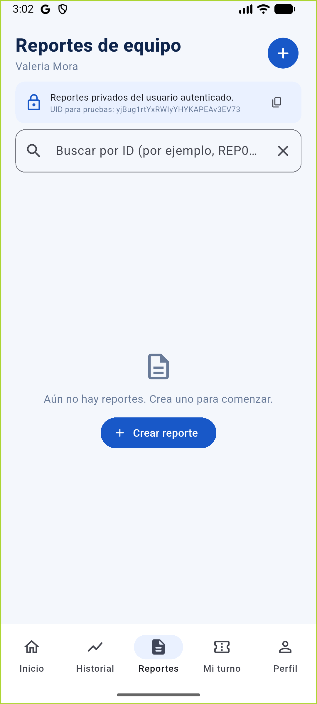

Práctica de base de datos móvil con Cloud Firestore
- Alumno
- Víctor Emanuel Rodríguez Ochoa
- Grupo
- IDGS14
- Maestro
- Manuel Contreras Castillo
- Fecha
- 16 de octubre de 2026
- Aplicación
- BioMedica
- Base de datos
- Firebase Cloud Firestore
Objetivo
Integrar una base de datos no relacional a BioMedica y verificar la integridad, persistencia, consulta, actualización, eliminación y manejo de errores de reportes de equipo.
Implementación
- Se agregó una pestaña Reportes a BioMedica Flutter.
- La colección Firestore es
reportes. Cada documento usa como ID el identificador del reporte (p. ej.REP001) y almacenaequipment,description,priority,ownerUidy marcas de tiempo. - Firebase Authentication crea una sesión anónima. La app filtra por UID, ordena los resultados en el dispositivo, y permite crear, leer, editar y eliminar reportes.
- Se prepararon reglas en
firestore.rulespara limitar cada documento a su propietario y validar campos, tipos y rangos. Aún no se han publicado en Firebase; por tanto, la política efectiva del proyecto queda pendiente de confirmar. - La consulta se cambió para no requerir un índice compuesto de Firestore. La captura enviada mostraba el error de ese índice; ya no se ordena en la consulta remota.
Baja, Media o
Alta. La autenticación anónima y las reglas por propietario
corresponden al escenario de prácticas.Matriz de pruebas Firestore
| Caso | Acción y esperado | Resultado observado | Estado |
|---|---|---|---|
| TC01 — Alta válida | Guardar equipo, descripción y prioridad con ID REP001; consultar el documento. | REP001 se creó y apareció en la lista real de Firestore, con equipo “Monitor cardiaco”, descripción “No enciende la pantalla” y prioridad Media. Luego se eliminó en TC05. | Aprobada — real |
| TC02 — Campos vacíos | Guardar sin equipo ni descripción; mostrar validación y no crear documento. | El test de interfaz confirmó los dos mensajes requeridos y que el repositorio no recibió datos. | Aprobada — automatizada |
| TC03 — ID repetido | Crear REP001 dos veces; no sobrescribir el primero. | La captura compartida muestra una sola fila REP001 tras el doble insert, pero en el panel de detalle está seleccionado otro documento con ID automático y campos del esquema anterior. La vista no permite comparar el contenido anterior y posterior de REP001 ni demostrar por sí sola que el segundo intento se rechazó. El test simulado sí comprueba que la capa de repositorio rechaza duplicados. | Parcial — evidencia de consola, resultado de sobrescritura no concluyente |
| TC04 — Actualización | Cambiar prioridad Media → Alta y volver a consultar. | En Firestore real se actualizó REP001 a Alta y el cambio reapareció en la lista. | Aprobada — real |
| TC05 — Eliminación | Eliminar REP001 y consultarlo nuevamente. | Se confirmó la eliminación desde la app y el listado real quedó vacío. | Aprobada — real |
| TC06 — Documento inexistente | Consultar el ID REP999 sin bloquear. | La búsqueda real mostró “No se encontró el reporte REP999” y la app siguió respondiendo. | Aprobada — real |
| TC07 — Pérdida de conexión | Desactivar la conexión durante escritura e informar el estado. | El test automatizado simula error “Sin conexión con Firebase”; no se hizo una desconexión de red durante una escritura real. Firestore puede mantener escrituras pendientes en caché. | Parcial — falta prueba de red |
| TC08 — Persistencia | Cerrar/abrir app y consultar un reporte guardado. | REP008 se creó en Firestore; tras forzar el cierre, abrir de nuevo e iniciar sesión, REP008 volvió a aparecer con sus campos. | Aprobada — real |
| Análisis estático | flutter analyze. | Terminó con “No issues found”. | Aprobada |
| Pruebas automatizadas | flutter test test\reports_screen_test.dart test\widget_test.dart. | 18 pruebas pasaron, incluidos TC01–TC08; TC07 y TC03 están simuladas. | Aprobada — 18 pruebas |
| Build Android | flutter build apk --debug. | Generó build\app\outputs\flutter-apk\app-debug.apk. | Aprobada |
La persistencia y CRUD descritos como reales se verificaron en el emulador Android contra el proyecto Firebase indicado. TC03 y TC07 se distinguen expresamente como pruebas simuladas o pendientes de validación real.
Evidencias



La captura de Firebase Console fue compartida para el
doble insert, pero no permite concluir si el contenido de REP001 cambió.
Las reglas actualizadas en firestore.rules todavía deben
publicarse y verificarse en el proyecto.
Conclusión
Se integraron en BioMedica altas, consultas, actualizaciones y eliminaciones de reportes de equipo en Cloud Firestore. Las validaciones obligatorias, el control de IDs repetidos y la búsqueda de documentos inexistentes evitan errores comunes; la escritura, actualización, eliminación y persistencia tras reabrir se observaron en el emulador con Firestore real. El análisis, las 18 pruebas automatizadas y la compilación Android también finalizaron correctamente.
Queda confirmar en Firestore que un segundo alta de REP001 se rechaza sin cambiar los campos del documento; la captura de consola aportada muestra solo una fila, pero no el contenido de REP001. También falta simular una pérdida real de conexión durante una escritura. Aunque el código contiene reglas que limitan cada documento a su dueño, estas aún no se han publicado; por eso la seguridad efectiva del proyecto no queda certificada y no debe considerarse listo para datos reales hasta desplegar y probar esas reglas.